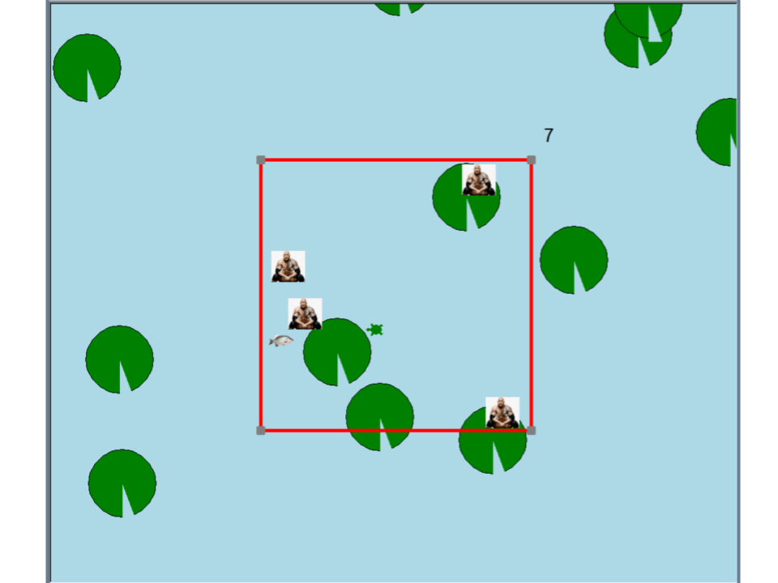

This is my Portfolio Page!
100% Correct Weather App that you can Definitey Rely on

It randomly generates one of four weather options (cloudy, sunny, rainy, snowy) and lets you guess which one it is, after which is will generate an animation that shows that weather.
When moving parts are involved in the sunny, rainy, and snowy weathers, multiple sprites are generated and put into a list where a general command allows them to move in the desired path.
All clouds are randomly generated by a turtle drawing circles of random radii and random locations coded in a way that it covers most of the sky.
Most Sophisticated Snake-Like Game Ever Made
The game randomly generates four Rocks and a single fish. The goal is to get the fish without hitting the Rocks or hitting the red side lasers. If you get the fish, the turtle moves faster.
The only relevant buttons are "a" and "d" to turn the turtle and the turtle moves forward by itself. Each press turns the turtle 45 degrees to the left if "a" is pressed and right if "d" was pressed.
When a turtle enters the lily pad it is hidden because they are the same color, which makes the game harder. There is a counter on the top right that keeps score.
Incredible Recreation of Atari-Breakout (pls dont sue us)

Generates turtles in the shapes of a paddle, ball, and bricks and gives commands to each turtle that allow them to do their roles. The game starts with a request for a name and once a name is
entered, the game begins. It randomizes starting angle and speed and if the ball falls below the paddle, a try again message is displayed but if all the bricks are destroyed, a get well soon message is displayed
The game is a little choppy due to the amount of calculations the algorithm has to do every time the ball moves, but other than that it works as intended.
Therapy for Mosquito Haters

Generates a mosquito at a random position and moves it i random ways while you control the Mosquito Swatter 2000 and use it to swat the mosquitos my moving it with your mouse and pressing space bar to swing.
Each mosquito swatted is one point and once you reach 6 points, you will move outside to continue your quest of mosquito swatting but now there are butterflies who are actually attracted to your Mosquito Swatter 2000.
If you swat a butterfly, you will be deducted 5 points because butterflies are good.
TI-84 Knockoff

Asks user what degree the polynomial is then asks for coefficients of each exponent.
Turtle draws the graph by taking two coordinate points and connecting them.
There are two hundred coordinate points, so the process is a bit slow.
Spy Fish Tank

There was a hacking at a company that happened because of bad fishtank monitoring software and security.
The problem was buggy code and a weak password set by one of the employees.
The code wasn't to difficult to fix and after it was fixed the monitoring system ran properly and the password magically became strong so no hacking ever took place ever again.